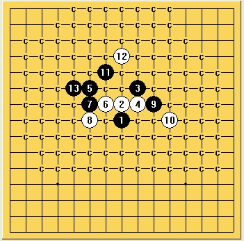

第51期全日本名人战决赛中村卫冕成功
首页
五子棋新闻
#1 第51期全日本名人战决赛中村卫冕成功 作者：没事摆石子玩 发表时间：2013-12-22 17:37:16
2013年12月22日，51期日本名人战决赛第四局战罢。中村名人开局溪月八打被交换后执白作战成功，82手大角投子。全谱如下： 中村自1976年始至今38年间，名人头衔达成24次！演绎不老神话
#2 Re:第51期全日本名人战决赛中村卫冕成功 作者：没事摆石子玩 发表时间：2013-12-22 17:40:16
其实这还不算他两次隐退得时间。。。前后有10来年没参加名人战。。。不然早达成30次了。。名人战决赛60胜局达成，这个记录除了他自己估计也无人能破！
#3 Re:第51期全日本名人战决赛中村卫冕成功 作者：问题不大 发表时间：2013-12-22 18:05:40
太强大了。。。热烈祝贺！！！
不过问一句，79反挡一下也必了吗？
#4 Re:第51期全日本名人战决赛中村卫冕成功 作者：没事摆石子玩 发表时间：2013-12-22 18:10:10
估计都没什么时间了最后 反挡白至少也是和棋吧。。
#5 Re:第51期全日本名人战决赛中村卫冕成功 作者：天鹜 发表时间：2013-12-22 18:18:43
热烈祝贺。貌似反挡没必，大角两次漏杀，有些可惜。
#6 Re:天鹜【==Re:第51期全日本名人战决赛中村卫冕成功==】 作者：问题不大 发表时间：2013-12-22 21:57:10
两次漏杀？求指点。。。
#7 Re:第51期全日本名人战决赛中村卫冕成功 作者：屏蔽 发表时间：2013-12-23 7:49:13
17-K10、21-37、27-31、35-44 都是黑必胜 21-37那个是我自己拆出来的 其他的是看别人拆的
#8 Re:第51期全日本名人战决赛中村卫冕成功 作者：没事摆石子玩 发表时间：2013-12-23 8:11:36
都不是太简单得杀。。实战都很正常吧 中村选择这种受虐变化对大角还是可行得。。事实证明大角还是差一点。。。要是坦克这种下黑棋估计能赢
#9 Re:第51期全日本名人战决赛中村卫冕成功 作者：趁晨陈尘沉 发表时间：2013-12-23 11:59:35
再次恭喜中村
#10 Re:第51期全日本名人战决赛中村卫冕成功 作者：周光乐 发表时间：2013-12-23 12:35:13
恭喜恭喜
#11 Re:没事摆石子玩【==第51期全日本名人战决赛中村卫冕成功==】 作者：励精 发表时间：2013-12-23 13:51:50
引用：
原文由 没事摆石子玩 发表于 2013-12-22 17:37:16 :
中村自1976年始至今38年间，名人头衔达成24次！演绎不老神话
应该是从1975年开始，第25次坐上名人位。石子少数了一年。中村果然是连珠之神，参见http://www.ljrenju.cn/news/japan.htm#meijin 表。
#12 Re:第51期全日本名人战决赛中村卫冕成功 作者：^版徒 发表时间：2013-12-23 14:12:19
这个10不是地毯了么？黑棋肯定没看过这个谱，13手就错了……
#13 Re:第51期全日本名人战决赛中村卫冕成功 作者：^版徒 发表时间：2013-12-23 14:20:20
 名人赛中村溪月10.rar
名人赛中村溪月10.rar
#14 Re:第51期全日本名人战决赛中村卫冕成功 作者：小样就是这个样 发表时间：2013-12-23 15:58:37
楼上果然厉害，竟然能用这个13拆出必胜
#15 Re:第51期全日本名人战决赛中村卫冕成功 作者：梧桐风 发表时间：2013-12-23 15:58:58
这个13霸气侧露的节奏
#16 Re:第51期全日本名人战决赛中村卫冕成功 作者：小样就是这个样 发表时间：2013-12-23 16:04:55
14冲3走白2上面，黑棋看似难杀了，没想到还有必胜
#17 Re:第51期全日本名人战决赛中村卫冕成功 作者：没事摆石子玩 发表时间：2013-12-23 17:06:43
1975年他第一次出现在挑战者位置上，24次达成名人位应该是没错的。。。之前22次很清楚 这两年两次
#18 Re:第51期全日本名人战决赛中村卫冕成功 作者：yidefei 发表时间：2013-12-23 21:35:18
看实时的录像，可以看出中村的18手长考了100分钟还有余
#19 Re:第51期全日本名人战决赛中村卫冕成功 作者：问题不大 发表时间：2013-12-24 20:39:03
其实换个角度想，能在跟中村的对局中下出这么多必胜的机会，已经实属不易了。
#20 Re:第51期全日本名人战决赛中村卫冕成功 作者：忧郁的双眼 发表时间：2013-12-24 22:09:54
恭喜老头子！
#21 Re:第51期全日本名人战决赛中村卫冕成功 作者：罗源棋手 发表时间：2013-12-25 0:30:13
碉堡了。。。。围观赌徒。。
#22 Re:第51期全日本名人战决赛中村卫冕成功 作者：怪 发表时间：2013-12-25 1:33:28
一点感觉大角的棋还是少了点攻击性，很多地方的转换只停留在往扩大优势保持先手和更好的棋型上发展，而不是有机会就往暴力致死的路上走，看着不像是一盘不胜即死的棋。尤其20手后黑无论材料和先手都保持的很好，选择这个21局部直接交换而不是其他的21继续做棋引导棋型，感觉定型时机不对并且仓促就发动了攻击，材料和心理准备都不够，尤其利用交换后的棋型下了这个27，并且27手后的攻击方向并不是由他自己引导反而是防守方引导，总在进攻受阻后才往另一个方向上转，总给人感觉黑棋这盘棋没有利用好自己的先手和材料，过于保守，或许他前半盘下的点不弱，但不匹配名人决赛关键一局落后方应该要有的对局态度。或许是中村对大角足够了解才给了这个10吧。
另：13楼更暴力。。。
#23 Re:第51期全日本名人战决赛中村卫冕成功 作者：梧桐风 发表时间：2013-12-25 8:48:27
楼上怪蜀黍分析的很有道理